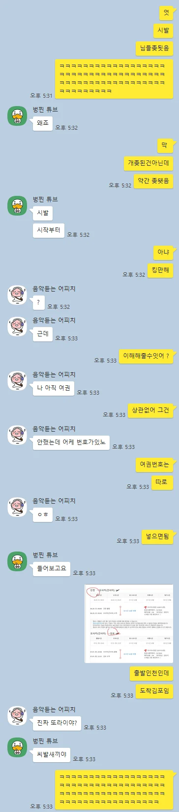

인천 - 간사이
간사이 - 김포
어쨌든 한국으로 돌아 옴
그래도 인천에서 김포가는게 아니네
청주 아닌게 어디여 ㅋㅋ
제주 아닌게 어디여 ㅋㅋ
뭐가 문제임
차 공항주차장에 두고가면 문제임
그래도 인천-김포면 공항철도 있으니 뭐 ㅋㅋㅋㅋ
나처럼 무안에 차대놨는데 인천으로 오지만 않으면 뭐...
소주까고 예약했누
출장 초기 예정 무안 출발 무안 도착
"주차비도 공짠데 차갖고 가까?"
출장중간에 일정 변경 -> 인천도착으로 바뀜
적어도 내 의지는 아니었음...
ㅅㅂ ㅋㅋㅋ다시 ktx타고 집도아니고 무안공항........... 아찔하네 무안공항이면 인천공항애서 출발허는 고속버스도 없잖어 ㅋㅋ 인천김포는 외귝인도 많이하는 환승구간인데 저건 개지랄발광 오도방정이 맞다
존나 신박한 보법이네ㅋㅋㅋㅋㅋㅋㅋㅋ
김포 인천공항 전철 있을건데
공항철도!!
뭐가문제임?
차
김포가는거 개비싸지않나
킹만해 ㅇㅈㄹ ㅋㅋㅋㅋㅋㅋㅋㅋ 개웃었네 아 ㅋㅋㅋㅋ
근데 또 킹만한건 맞는게ㅋㅋㅋㅋㅋ
벙찐 튜브가 ㅈㄴ 웃기네 ㅋㅋㅋㅋㅋ
킹만하긴한데 힘들잖아 쓔발ㅋㅋㅋㅋㅋ
김해가 아닌게 어디냐
인당 만원에 1시간 정도 추가 되는거니 킹만한건 맞음 ㅋㅋ
바로옆에있는거 아니여?
지방 사람들이면 김포 쉽지 않지
김포 주변 도로 존나 햇갈리게 만들어놨어
진짜 좆됐다 싶다가 그래도 킹만해라고 생각 들긴함ㅋㅋㅋㅋㅋㅋㅋㅋㅋㅋㅋㅋㅋ
난 일부러 ㅇ이렇게 하기도 하는데ㅋㅋ
어디 공항이든 대중교통으로 다니는 편이라
병신같긴한데 큰하자는 아니긴함ㅋㅋ
편도 1시간정도니
아시아나 간사이 출발편은 김포 가는 편이 출발 시간이 존나 적절해서 나도 김포로 내린 적 있음
킹만해 ㅇㅈㄹ ㅋㅋㅋㅋㅋ
공항철도 있으니 그나마 다행이지
ㅋㅋㅋㅋㅋㅋ설명 잘하네 ㅈ됫는데 킹만하긴하네 ㅋㅋㅋㅋ
설마 출발 도착 반대로 한 거냐?